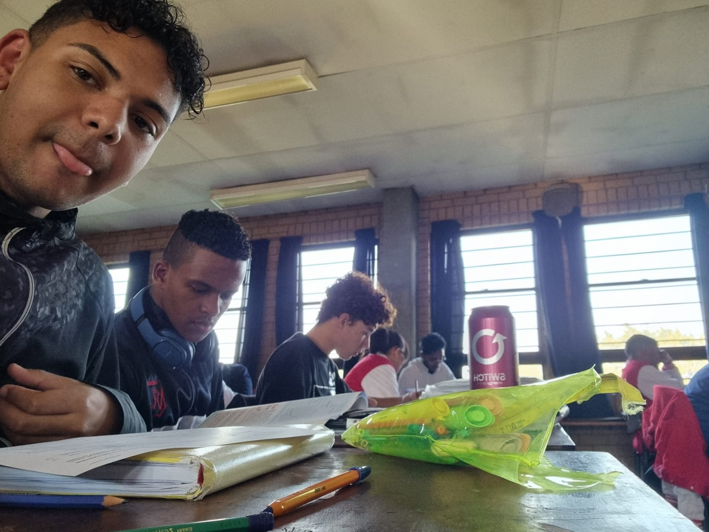

|
Happy birthday Dillion (spelt the same way perrito spells it) |
|---|
To our favourite Leprechaun of the
|
|---|
|
|
 |
|---|
| What do I have to say? |
|
Congradulations on making it through grade 12. You have encountered difficulty upon difficulty. Trials and tribulations have swept
you clean of your senses and have left you battered beyond the point of sanity. Nevertheless, well done on making it this far.
You have cycled through another year of your life where you are now legal,and,if you want, we could go take a trip to LUV LAND to get you that toy you have always
wanted. Yes,it is true. I look like a monkey, but ,if it were a lesbian, it would be you. And if you wondered why you got a boost to cross the road, it is because I was at the drivers seat.
However, what I have always wanted to say, is that it is important as men that we acknowledge our struggles and look past them.For we are not what happened to us, we are who we choose to be.
It is important to not posses an idol as a man. For we worship not the flesh of the world but the spirit who guides us. It is important to understand that if you feel depressed, it is because you have done something to feel that way.
I wanted to wish the leprechaun a happy birthday. And before you look at a persons eye-lashes, ask yourself if it would lead to a heart-break. your friend |